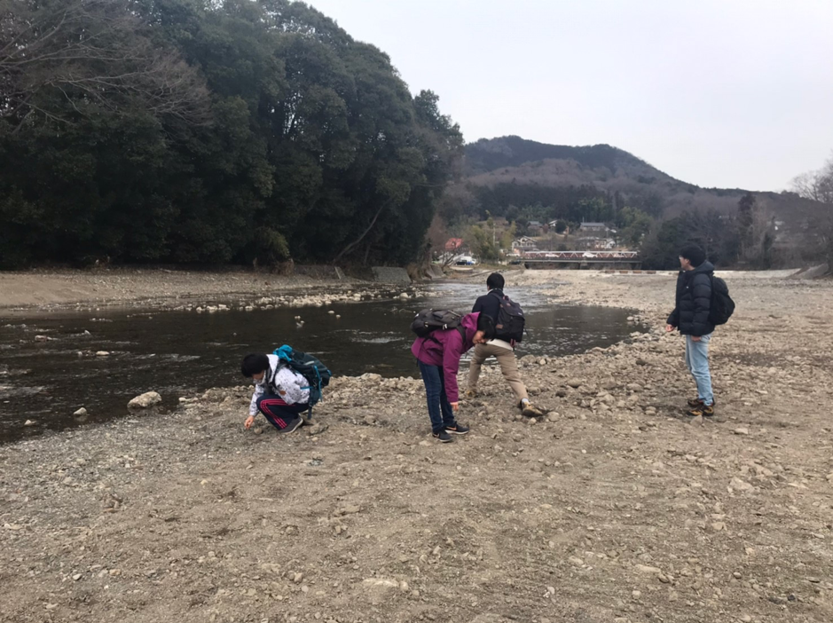
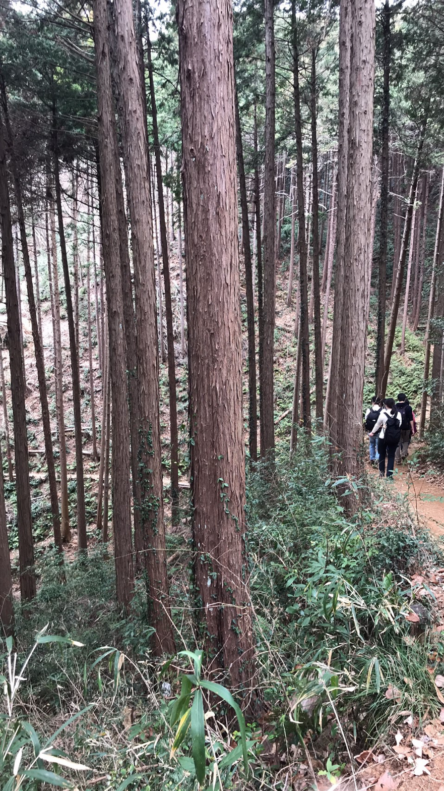
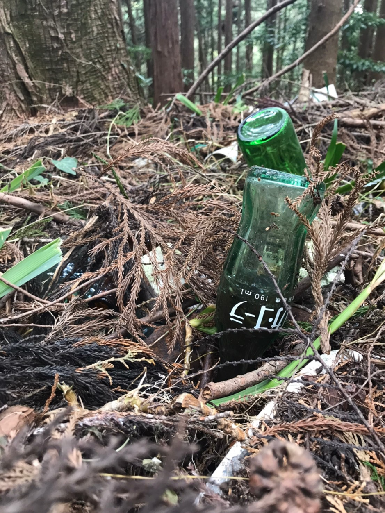
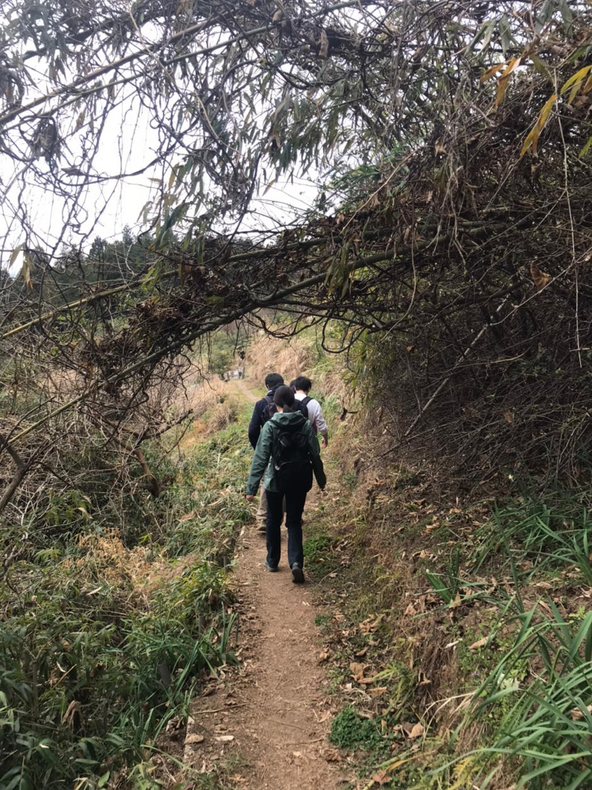
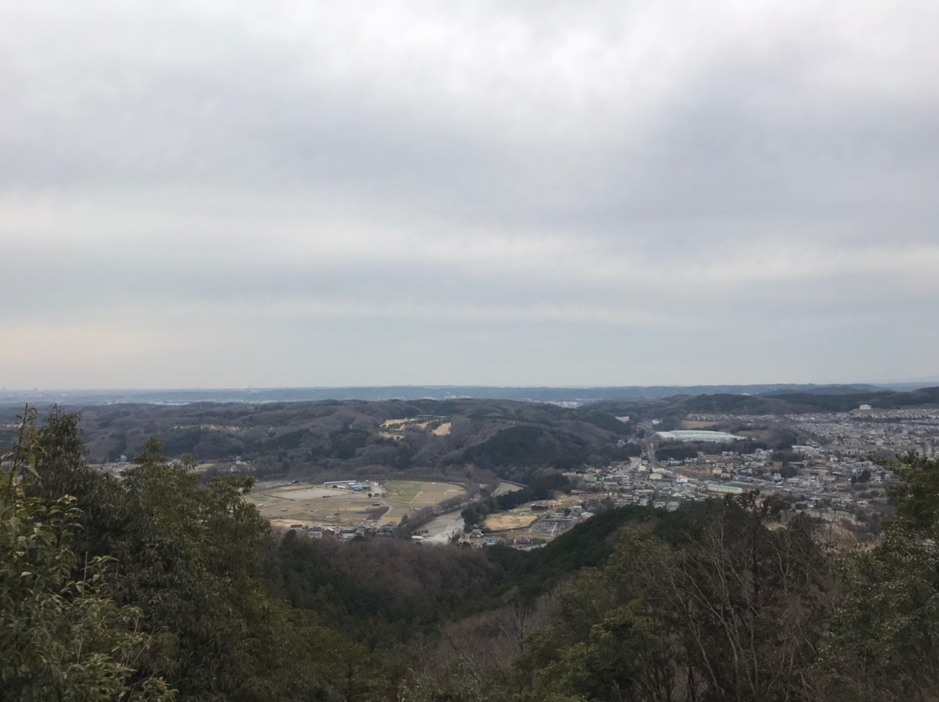

トレッキング部始動｜日和田山
2020.02.24 丸山
静寂な自然をどこまでも愛しながらも通学電車でビルの隙間に都会の闇を見出すことでおなじみ、しがない農学徒の丸山です。
さて、今回は東京大学Agrlien (以下、アグリアン) 内で発足したトレッキング部の初の活動について。
----------------------------------------------------
場所：関東の奥地・埼玉県の日和田山と物見山
日付：2020年2月15日(土)
内容：山登りという名の農作業に向けた体力づくり
---------------------------------------------------
ーーーー
以前ブログで書いたように(1)、アグリアンは様々な専門性や興味関心を持った学生が集まる農学部コミュニティです。やはり専門性を持つ集団には色々なベクトルがあってしかるべき。
ということで、現在アグリアンには通常の活動の他に
・野菜栽培・コンポスト部
・加工品部
・販売営業部
・トレッキング部 (New!)
・自転車部 (New!)
等の複数の小チームが存在し、ゆるっと複雑なベン図を描きながらメンバーが所属する体制を取っています。
アグリアンの活動は農学という学問分野よろしく、農業という営みを幅広い視野で俯瞰的に眺めることを重視しています。
最近収穫した桜島大根(2)の漬物でもかじりながら語り合う、農学サロン的な存在でありたいと思います。
ーーーー
以上、読点で永遠に文章が続く樋口一葉のような長い前置きでした。
まあなんということでしょう。まだ本題にすら入っていないのです。
そろそろ冗長な文章に耐えうるメンタリティを持った読者が選抜されてきたことと思いますので、トレッキング部の初の活動について話します。
言わずもがな農学部は農業だけでなく漁業、林業、畜産と主に第一次産業を見据えた学部。
アグリアンは農業に尖った団体ではありますが、
「玉ねぎを見て森を見ず」状態にならぬよう、他の分野にも明るくなければなりません。
新たなチーム結成の気運が頂点に達した折、めでたくトレッキング部が発足することになりました。
初の活動場所に選ばれたのは埼玉県の日和田山→物見山ルート。
私は幼少期に遠足で登ったことのある懐かしい山々です。
ここからは写真多めでお送りします(運動不足で息切れ…という名の文章サボり)
高麗駅に降り立った初代トレッキング部のメンバー6名。
早速巾着田に向かいます。

記念すべき初の活動、なんと水切り(石切りとも呼ばれる)。
驚いたことに、水切り未経験者が2名いました。育ちの違いかしら？
トレッキング部の登竜門である水切りをマスターしたのち、曼珠沙華(彼岸花)の自生地に向かいました。
※水切りで遊ぶ場合は安全のため、かつ不審な大学生集団と思われないよう周囲に人がいないことを確認してから行いましょう。
曼珠沙華
(写真なし)
2月の曼珠沙華の自生地って葉で覆われているんですね…。
見頃の時期は人を見に来ているのかと勘違いするほどの人の山ですが、この時期は地元住み散歩中わんちゃんか我々のような時期を間違えて来た大学生しかいません。
なんだ草だけかと思って写真すら撮らなかった私。
しかし、現地で手に入れたパンフレットの花ごよみには、
「2月 曼珠沙華の葉が見頃」
と書いてあります。
なんということでしょう(2回目)。なぜ葉を鑑賞対象であると認識できなかったのでしょうか。
地面にぎっしり生えている草が曼珠沙華か雑草かと話していた我々が恥ずかしい。
さて、道中の無人野菜販売に興奮しつつも日和田山入り口に到着。
森林学科のメンバーの解説を聞きながら山を登り進めます。

森林と農業の関係は？土壌はどう違う？などニッチな会話をしながらさくさくと登っていきます。

不法投棄されたビン。
山もコーラを飲むんですね。メルヘン。
後日私が訪れたアンティークショップで、写真のコカコーラビンと同じものが2000円で売られていました。曼珠沙華の葉よろしく、やはり鑑識眼というのは大事ですね。

体力づくりにいつかトレイルランもしてみたいです。

山頂から。
灰色の都会<自然<三度の飯 の順で自然が好き。
久しぶりに山登りができて個人的には満足でした。
これからも農作業のための体力を養います。
以上、トレッキング部の活動報告でした。
丸山
(1) ブログ：『ブログが始まりました』
(2) ギネス記録に載るほど大きくなる大根。丸山が桜島を訪れた際に種を購入し、アグリアンの畑で栽培試験を行った。
※本ブログの内容は個人的な意見であり、いかなる所属の見解を示しているものではありません。
※文章、画像の無断転載・無断使用を禁じます。